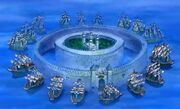

Hannyabal: Alcaide(监狱, Kangoku Shochō), persona ambiciosa, pero que es capaz de realizar su trabajo cuando
las situaciones
(y el bienestar propio) se lo exigen.
Magellan: Anterior Alcaide,
residía
en el nivel 4, es el consumidor de la Fruta Doku
Doku, sólo trabajaba alrededor de cuatro horas, ya que el uso de su poder le produce diarrea.
(Actualmente es el Vice
Alcaide).
Shiryu: Antiguo Jefe de la
Guardia(看守, Kanshu Cho), Igual en poder a Magellan, el abusó de su posición al
masacrar a los presos, hizo
que fuera despojado de su puesto y condenado a Nivel 6. Actualmente forma parte de los
Piratas de
Barbanegra.
Saldeath: Jefe de la
Guardia(牢番, Roban Cho), Comandante de los Bulgloris.
Sadi: Jefe de la Guardia
(狱卒, Gokusotsu Cho), Sádica torturadora, Comandante de los Guardianes Demoníacos.
Domino: Jefe de la
Guardia(副看守, Kanshu Cho), anteriormente Subjefe de la Guardia.
Guardia
Guardias humanos: estacionados en la sala de monitores o en otros lugares. Varían en
funciones.
Blugori: gorilas
super fuertes y que usan hachas de doble filo. Residen principalmente en el nivel
uno y dos. Se los puede llamar a otros niveles.
Los Guardianes Demoníacos
Cinco temibles guardianes de Impel Down, bajo el mando de Sadi. Eran
cuatro antes del salto temporal.
Crocodile mencionó que estas bestias eran usuarias de una Fruta del Diablo de
tipo Zoan "despertada",
capaces de regenerar la salud del consumidor muy rápido. Los Guardianes Demoníacos se caracterizan por tener una
fuerza y resistencia anormalmente altas.
Existen cinco guardianes conocidos:
Minotaurus: Un toro bípedo
que
golpea a los prisioneros a menudo con un mazo gigante (también golpeo a Jinbe en el
nivel 6)
Específicamente criados para Impel Down, son responsables de evitar que los presos se
fuguen.
Abundan especialmente en el nivel 2 al ser denominado "Infierno de las bestias
salvajes".
Basilisk: serpiente gigante
nacida
de una gallina que comparte rasgos de ambas criaturas.
Mantícoras: criaturas
con
cuerpo de león y cara humana
que
pueden comer a sus presas por completo, incluso los huesos. Tienen la capacidad de
hablar, repitiendo como loros lo que diferentes presos han pronunciado durante su
estancia.
Puzzle
Scorpion:
criaturas extremadamente venenosas que
pueden unirse para formar un ciempiés gigante, y que al ser golpeadas vuelven a su
forma
original.
Sphinx: el jefe del nivel, muy
fuerte y
guardián de las escaleras. También tiene capacidad de hablar.
Kamakiri: bestia que tiene sus brazos afilados como cuchillas, que Luffy y Buggy
vencen
sin problemas, al dejar este enterrados sus brazos en el piso al intentar atacarlos.
Colibríes: bestias salvajes que se encuentran en el nivel 2. Sólo uno se ha
mostrado.
Lobos: Extremadamente peligrosos y voraces, tanto que tuvieron que ser traslados al
Nivel 5 porque devoraban a las bestias infernales del Nivel 2. Mr. 2 pelea contra
ellos
para salvar a Luffy pero termina siendo salvado por él, quien usando Haoshoku
Haki deja fuera de combate a los lobos.
Fuerzas de la Marine

Los Buques de la Marine
Alrededor de la puerta de Impel Down se encuentran quince acorazados dispuestos en forma
de anillo. Superan incluso el número de buques que se envían en una "Buster Call". Luffy
quedó muy impresionado por el gran número de los acorazados pero Hancock le dijo que esta
medida de seguridad era bastante normal y razonable porque tanto es el lugar dónde se
encuentran los presos más peligrosos del mundo.
Magellan les ordenaría que se apartaran de las puertas para que los fugados no pudieran
abordar ninguno de los navíos. Y aunque así lo hicieron, finalmente los presos
consiguieron robar uno de ellos gracias a Jinbe y navegar hasta Marineford.